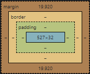

요소를 삽입했을 때 혼자 한 줄을 차지하는 요소
요소의 너비가 100% (div, p 등)
p 태그로 작성한 문장
줄을 차지하지 않는 요소
화면에 표시되는 콘텐츠 만큼만 영역을 차지함
나머지 공간에는 다른 요소가 올 수 있음 (img, strong 등)
strong 태그로 작성한 문장실제 콘텐츠 영역, 패딩(padding), 박스의 테두리(border), 그리고 마진(margin) 등의 요소로 구성됨
박스 모델 중 실제 콘텐츠 영역(가운데) 크기 지정
width 200px
height 200px
고정 크기
width 20%
height 20%
가변 크기
width auto
height auto
콘텐츠 양에 따라 자동 결정, 기본값
실제 박스 모델의 너비를 계산할 때 어디까지 포함할지 결정
style="box-sizing: border-box;"
테두리까지 포함해서 너비값을 지정
style="box-sizing: content-box;"
콘텐츠 영역만 너비값 지정, 기본값
선택한 요소에 그림자 효과
box-shadow: 수평거리 수직거리 흐림정도 번짐정도 색상 inset
수평거리와 수직거리는 필수, 나머지는 옵션
p style="box-shadow: 2px -2px 5px 0px;"
p style="box-shadow: 5px 5px 15px 5px blue;"